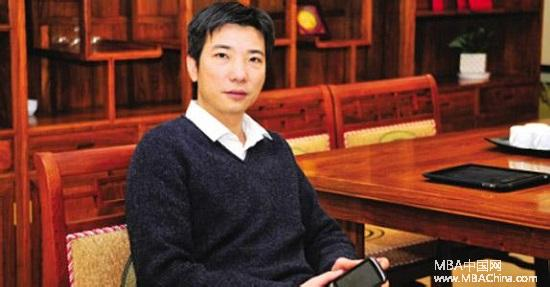

【MBA中国网讯】11月11日，美图秀秀董事长、隆领投资创始人蔡文胜毫无保留地全面分享了自己在中国互联网行业16年的闯荡与感受。蔡文胜自2000年进入互联网领域从事域名投资，2008年进入天使投资领域，先后投资4399游戏、美图秀秀、暴风影音以及58同城等数十个互联网项目，成为中国着名的天使投资人。
以下为蔡文胜演讲原文：
有一个法则叫一万小时法则，我觉得这是非常对的，一个人要做成一件事，必须要有一万个小时的锻炼，这个其实也会决定你未来会成为什么样的人。
我们举例，比如巴菲特，很多人都想学巴菲特，为什么先不从他的学习能力学起?巴菲特在1955年回到老家奥马哈那个小镇的时候。当时美国大概也只有三千多个股票，但是巴菲特把三千多个股票所有的财报全部都了解的一清二楚，只要谁问他，他都能给你说出这个财报的亮点和不足等等各个方面，这也奠定了他能够快速的找到真正有价值的东西。
后来2004年我去了北京，我就创建了265.com，2008年我把它卖给了谷歌，2004年到北京非常幸运，得到了IDG和谷歌的投资，2008年卖掉是两千万美金，当时觉得已经非常好了，现在回头看真的是太便宜了。后来，我有个朋友在我卖掉以后也创建了一个叫2345.com的导航网站，后来这个网站卖给了A股公司，现在这个公司的市值是几百亿人民币。
我不后悔便宜卖掉，我知道人生必须要有不同阶段的成功。
因为卖掉了265,我又回到厦门，当时已经在北京开始有点小名气，2007年以前实话讲，我是没什么名气的，2008年有点小名气，找我的人越来越多，后来我又选择回到了厦门，这也才能创造出4399游戏跟美图秀秀。
在2004-2008年这个阶段我还开始做了一些投资的项目，天使投资，包括58,2005年的时候我投了50万人民币，这个回报现在应该是几亿美金。暴风影音也是2005年投的，当时投资是180万人民币，现在回报也是几亿人民币。
上面这两个故事给我的启发是，投资是需要时间的。

很多人现在已经看到，比如我觉得暴风跟58是很成功的，但两个都是2005年投的到现在，整整十年的时间，这也是为什么大部分的基金不管是IDG、红杉他们都不会赚到很多钱的原因，他们熬不住。全中国所有的VC加起来赚到的钱都不如一家公司赚的多，就是南非一个叫MIH的公司。
当时南非公司MIH是2200万美金从IDG跟盈科数码手里接走腾讯45%的股份。IDG当时为什么卖，我曾经问了IDG的周全，他说，小蔡，我们是从1996年成立IDG基金，到2001年手里一百多个项目，我要给LP一个交代，已经有六年了，当时能够回报最好的就是腾讯，所以只好卖掉腾讯。
就像你买了很多股票，你需要钱的时候往往把最赚钱的卖掉，把那些暂时亏的反而留着，这是人性。
所以IDG,包括李泽楷就把腾讯给卖掉了，我们知道MIH现在还有多少，2000年开始投资，他现在还持有34%腾讯的股份，据说上市到现在一股没卖，按照腾讯今天两万亿的市值他应该是差不多七千亿港币。
全中国所有VC包括后面新创的所有加起来，他们有赚到7千亿吗?我估计是没有的。
所以这里也是给我很大启发，一样的，2005年、2006、2007年，我其实投了差不多有七八十个项目，后来也在反省，真正能让你赚钱的就是两三个公司，两三个股票。同样我自己也犯了错，一般都是把赚钱的先卖掉，所以投资有时候一定是要反人性的。
当然这也说明一点，如果用投资基金的方式去做投资，一般不会好，同样你去买基金产品也不会让你赚大钱。很简单，因为基金经理更多想的是管理费，他只要管理费就可以了，巴菲特曾经说过一句话，你自己是一个百万富翁，你去听那些坐公交车上班的股评家分析，你会发财吗?
那同样你的钱你交给基金经理，他就是为了赚管理费，你能够赚到很多钱吗?挺难的。同样我自己有一个原则，如果一开始有很多出名的天使投资人投的项目，我都不会参与，我觉得一定不会成功。
比如我跟李开复、徐小平我们曾经有一个天使会，我们成立了一个基金，里面投的项目没有一个成功的。
为什么?很简单的道理。
第一，我们都觉得大家都投了，大家都会去帮忙，我就不帮忙了，那些拿着我们这些大佬的钱，他们总是以为我们会帮很多忙，其实谁也没办法帮很多忙。
第二，一个东西能成功，就像今天你去看，很多人都说没有买腾讯，那些，因为最终赚钱的一定是少数的。所以我们现在去看，所谓的白马，大家看清楚这个公司的时候，其实这个公司已经普通的再普通不过了，因为你已经能够用手指头算出它的PE各个方面。
投资真的是需要远见的。
那什么是好的投资呢，我觉得巴菲特我还是非常崇拜的，他投资的道理是有的，就是买消费类产品，所有的东西都是围绕消费品，巴菲特的逻辑是什么?他在喝可口可乐他就买可口可乐的股票，他在嚼箭牌口香糖他就买箭牌口香糖的股票，他在看华盛顿邮报就去买华盛顿邮报的股票，这其实是一个非常朴素的道理。
今天唯一的差别就是消费品在改变，因为我们慢慢不再看报纸，我们的报道有更多的选择了，现在的口香糖千奇百怪，现在的消费品变成什么了，你在刷微信你就赶紧买腾讯的股票，你在用美图秀秀你就应该买美图秀秀的股票，你用小米手机就去买小米手机的股票，这其实就是个简单朴素的道理。
其实消费品已经从实体转到虚拟了。30年前，因为我是70年出生的，我那时候我记得10岁以前我是穿不到新裤子的，我的裤子膝盖要补，屁股也要补，都是我哥哥穿过了，我妈给我补一下我再穿。所以那时候我们那个地方创业的人，安踏他就做鞋给我，七匹狼做衣服衬衫给我，就一定发财，因为那时候物资匮乏。后来我们为了改善生活我们喝水，所以娃哈哈卖水给你，为了吃的方便，所以康师傅卖你方便面，康师傅就发财了。后来我们觉得老房子不好，所以万科、万达就做了一大堆房子给我们，这些人在不同的阶段都发财了。
但到了今天，大部分的物资其实都是过剩的，所以这也是为什么这些企业现在不太好的原因。
80年代、90年代为什么日本电器索尼松下挣那么多钱，而为什么现在又亏钱?
因为他们把效率提高到极限，最终其实一定是亏钱的。以前我们穿衣服是因为一定要保暖，现在不是因为这个原因，是为了时尚或者其他方面的原因，以前也都是穿破了才去换。日本人做的家用电器，说实话如果因为用破你才去换，你一百年也不会用坏，所以他会进入破产阶段，所以一个新的消费品，虚拟网络出来了，我们把更多的娱乐放到了虚拟上面。
以前男人赚钱了就泡夜总会，所以当时北京的天上人间各个城市的夜总会都发财了，现在男人流行到网站、映客、陌陌上去看直播，它其实就是网上的夜总会，所以这是一个虚拟的消费品升级。
另外一个升级是什么?同样是这些实体公司，他需要有情感的需求，现在有句话说的很好，代表大部分女生，也代表25岁以下男生的消费需求，三句话：爱美，怕死，缺爱。
这几乎是现在所有消费的重点，你只要围绕这三句话，围绕这三个去做消费品都是对的。
所以你可以看到，美图秀秀为什么这么多人用，因为所有人都爱美。你们去看看现在的朋友圈，你会发现大部分都在锻炼身体，在跑马拉松，因为都怕死。为什么我们的社交网络现在这么流行，因为现在的小孩除了学校就是家庭，应该是缺乏爱的，所以他们要在网上找各种各样的爱。
刚才我们说的从消费的角度，我们其实一样是可以看到，那么你们就会说腾讯的股票已经那么贵了，大家都说股票那么贵，怎么办?
首先这么贵了他还会再贵，你看香港股市，有个很搞笑的地方，大部分公司喜欢把股票不断拆分，拆成几毛钱，就是因为他抓住了人性，大家都贪便宜，不愿意买贵的股票，却不知道好东西就是贵的。好东西你觉得贵的时候，其实是因为你买不起，当你有了钱一定还去买，但是你因为便宜去买一个东西，你卖不出去的，你只有找到一个人跟你一样贪便宜才能把这个东西卖掉。
所以你买到贵的不用担心，你会喜欢，别人也会喜欢，你看到好的东西，你买不起只是现在没有钱，但咬咬牙买下来，没有钱可以先买一半也没有关系，但是如果你贪便宜，你一定会买到更便宜的东西。
我们都在说现在很难再出现BAT这样的公司了，但我认为一定还会有新的大公司出现。现在很多人就有一个逻辑，BAT是做什么，就是做互联网。
错!
我们知道中国最早的互联网就是三大门户，网易、搜狐、新浪，你知道在12年前，也就是2004年，有谁会知道BAT会崛起吗?在北京当时我记得很清楚，技术人员都不愿意去百度，因为大家不看好。腾讯、阿里也差不多，都是算第二梯队，但这十年过来，他们三个成为最强者。同样的道理，你认为他们三个未来就是最强的吗?不，一定会有新的去打破他们，你就需要找到他们。
那就有这样一个启发，那个新的颠覆者要具备什么特征呢?
首先，我们去看互联网的发展，我觉得互联网的发展就像一百多年前的电力发展是一模一样的。
我们知道电的诞生是1895年爱迪生在纽约第五大道开的世界上第一个电厂，发电机是英国人发明的，但美国的爱迪生发明了电力，作为世界上第一个电厂它可以集中供电，这家公司也是今天的GE,GE公司就是这样由来的。
当时电力刚出现的时候，就像我们十几年前看互联网我们都觉得挺神秘，当时GE出来的时候，大家都觉得电力公司就是老大，但GE并未成为当时最赚钱的公司。现在的谷歌、Facebook,雅虎、苹果他们就像一百多年前的电力公司，中国的BAT也是，那些陆陆续续在做基础建设的，未来真正赚钱的一定不是他们。
比如有了电，整个世界产业都发生了变化。福特就因为有了电站，1920发明了世界上第一条汽车流水线。以前德国人做一部汽车大概要花10个人工花半年时间才敲出一部汽车。但福特的汽车流水线很简单，生产汽车的效率极大的提高。他卖T型车，当时在德国卖一部车子大概需要五千美金，他卖500美金。T型车从1920年存在大概到1970年，所以福特成为了美国最富有的人。
那有了电我们可以发明什么，发明电冰箱、电风扇、电视机、收音机一大堆电器，这些都改变了我们的生活。而且在电的基础上发明这些的，都成了最有钱的人，也不是之一。他怎么改变我们的?比如你再看电冰箱在发展，他其实就改变了当时整个世界经济的格局。我们知道波士顿是一个美国有钱的城市，我们路演都要去波士顿，因为那边人很有钱。波士顿最早靠什么起家，靠捕鲸鱼，运冰船这两个产业起家。捕鲸鱼是为了做蜡烛，运冰船是把冰运到欧洲储存食物，但有了电发明以后，这些行业都消灭了。
比如电熨斗。为什么我们今天有男女平等，就因为有了电熨斗的出现。为什么呢，当时一个女人一天大概要花8个小时做家务，其中2到3个小时在烫衣服，后来有了电熨斗，女人的家务工作时间变短了，女人也可以走出家门去工作了。正因为走出家门工作，才开始有了经济独立，有了经济独立也就可以参加更多的社交活动。
这时候你再看香奈儿包，现在很多女人都在买她的包，但是香奈儿它真正厉害的不是它的包包，而是她的创造性。
当时女人的裙子都很长，她们出来工作后都觉得不方便，后来香奈儿在巴黎，她就把裙子剪到膝盖这里，当时这是她第一个这样干，后来也就成了今天职业装的由来。香奈儿还发明了什么，她还发明了运动服装。为什么她会发明这个，因为她有个情侣是俄罗斯人，一个作曲家，只有俄罗斯人穿秋裤，她从这里得到启发，把秋裤加了两个口袋，就成了今天的运动服装。
其实我在说这些比喻，也是在说到今天互联网一切都好，BAT,Facebook也好，都把基础建设都搭好了，就像我们30年前的中国经济腾飞要先修桥造路一样，但那些修桥造路的不一定是最赚钱的，你去买A股里面的那些高速公路，你不会赚钱，一样的，互联网接下来进入下一场，就是一定要用这些基础建设做出创造，这些创造者就是颠覆者。
举个例子，比如Uber，Airbnb就是两个典型的例子，这两个公司严格意义上并不是互联网公司，Airbnb的创始人只是个设计师，Uber的创始人也不是互联网公司出来的，是做投行的，但这两家其实就是利用互联网去颠覆我们现有的东西。他们这两个颠覆的为什么会比较快成功?是因为这两个体量特别大，一个是车，一个是房。
未来其实还有太多可以颠覆的，你们去想想，比如房子为什么可以这样做，为什么一定要一房一厅，两房一厅，一个厨房，一个客厅，一个卫生间，为什么一定要这样?为什么不能是其他样子?这里面其实都可以思考，你看我们的会议室。前段时间我们去香港，看到香港的公司都会有一个会议室，但是那个会议室的利用率我估计平均下来一天估计也就一次。其实香港是一个地价蛮贵的地方，为什么不在设计里面调整share一下呢。我要说的就是未来其实所有的东西都是可以被颠覆的，这是一个趋势，也是一个方向。
颠覆者第二是要能够把复杂的事情简单化的东西。
其实美图是什么?当时我们做美图的时候也没想过要女孩子能够修脸，当时其实就是做傻瓜化。因为我们知道要修图就一定要用Photoshop,但它太复杂了，我们其实就是把它傻瓜化。这个傻瓜化也很简单，比如你要修眼睛，你要进到Photoshop后台，调这个参数，调哪个参数，这得多专业才行啊?其实干吗要那么复杂，你不就是要把眼睛弄大吗?其实就是要把眼睛弄大，无非是小大，中大，大大。那干脆我的技术就先把这个模型调好，然后让你选择，一键修复，这就很简单的逻辑，这就是最开始的美图。
当然美图后面已经优化了东西，但切入点一般都是一个很简单的，能把复杂的事情简单化，那么这个公司跟这个产品未来就能够得到巨大的发展。
第三，就是能够颠覆我们原来的这种商业模式，我们的运输途径的。
比如小米，小米为什么成功，我现在还是认为他成功，雷军他现在只是在成长的路上有一个暂时平台期。
很简单，联想当时要卖一台手机，要找一大堆的市场调查人员去调查，然后要生产两百万台，然后开始广告铺渠道，整个过程太复杂了。雷军把中间全部砍掉，他不用调查人员，在微博发一个大家需要什么样的手机，一大堆人给他反馈，这个比调查更有效。第二，他一定要生产多少台让大家看到，大家说要买一百万台，他还不放心，那你们一人交50块定金才下单。下完单以后开始开卖，他也不通过渠道，就直接从厂家发货给你，这个过程少了多少费用?
我觉得雷军这个人真的非常棒，他前面三年其实都在网上卖，这个效率是非常高的。只不过后来他想卖更多，卖个一亿台，两亿台，所以切入传统渠道，才把自己变重了。
有了这个思路，你再看娃哈哈他卖水。他牛在哪里，不就是他做的广告和他铺的渠道，就这两个强。那我们为什么没有人就拿我们这里的水在网上打品牌，去掉中间商直接批发去卖，一瓶水一块钱?说实话，你在村庄卖1快钱的利润中，娃哈哈大概只拿到3毛钱，7毛钱都被中间商拿走了。那我们为什么不做一个APP,让各个村庄的小卖店就下一个单，要十箱、二十箱，然后再送到，可以弄个微信、支付宝付钱，也不用给什么供应链、金融之类一大堆的东西赚钱。所以这里面还有非常多的空间。
最后我想说说，也是昨天大家关注的特郎普当选。确实让很多人大跌眼镜，因为大部分的精英大部分的主流都没想到特郎普会当选。这其实也说明很多问题。
第一层意思，我们现在大部分人听主流意见。其实所谓的主流所谓的精英不一定靠谱，因为他代表不了广大的人民群众，吃瓜群众。所以这是一个颠覆了的想法，昨天其实又有第二层意思，很多人担心的是股票跌了，后来其实美股竟然涨了，这出乎所有人的意料。我们都要找原因，这说明大家也接受了特郎普。世界都在变，特郎普他也在改变，所以刚才有嘉宾说今年是黑天鹅湖，我认为不是，因为这已经成为常态。这世界变化太快，没有什么所谓的黑天鹅，其实接下来每个月乃至每天都在发生这样的事情。
我记得2008年我们举办奥运会的时候，一个月后也没有人提到。今天再大的事情这个消息都只会存在一两天，我估计一个星期后没有人再去议论这个事情了。原因也就是因为信息太多，所以黑天鹅其实也会慢慢的变成就像白天鹅一样频繁。
第三层，更有意思的是，因为当时主流传统媒体去猜希拉里赢，他们的错误是情有可原的，但是为什么社交媒体包括谷歌、包括Facebook也会觉得希拉里会赢呢?
昨天两点我看到一张统计图：
这张图是说，如果只统计18岁到25岁这个年龄群的投票，那么希拉里是以504VS23的绝对优势胜出。我明白了一个道理，你看为什么主流包括我说的社交网络，因为我们社交网络做一个调查，一般的信息是愿意表达意见的那部分人的信息，所以这个调查大部分是错的。如果你从哪里听到哪个媒体在网络上做的调查达到了百分之八十多，我认为大部分是错的，因为那个只是代表那帮愿意表达意见的人的观点。
所以在美国18到25岁几乎全部是支持希拉里的，就是压倒性的赢了川普，于是就会形成社交媒体都认为希拉里是会赢的，但是最后才知道是错的。因为中西部的那些中老年人根本不表达意见，也不参与调查。英国的脱欧也是一样的道理，当时主流的媒体都报道不赞成脱欧，因为都是年轻人在表达意见，那些老年人都是沉默的。
这也是非常悲哀的事情，悲哀在哪里，所有的重大的决策其实都是为了年轻人，但投票结果都是由老年人来决定年轻人的未来。
最后我想说的，因为我们都是做投资的，投资真的是一个很开心的事情，不用跟谁打交道，也不用太多的应酬。把这个事情做好是很有意义的，当然成功不会那么容易，必须要花一定的时间去研究调查，能够有独立的思考能力才有机会成功。
所以在这里也祝大家能够成功，成功完了也能像格隆那样，有一定的情怀，能够对社会做出推动，这样你的人生就会非常完美，谢谢大家!
- 推荐图文
- 推荐人物
- 推荐企业